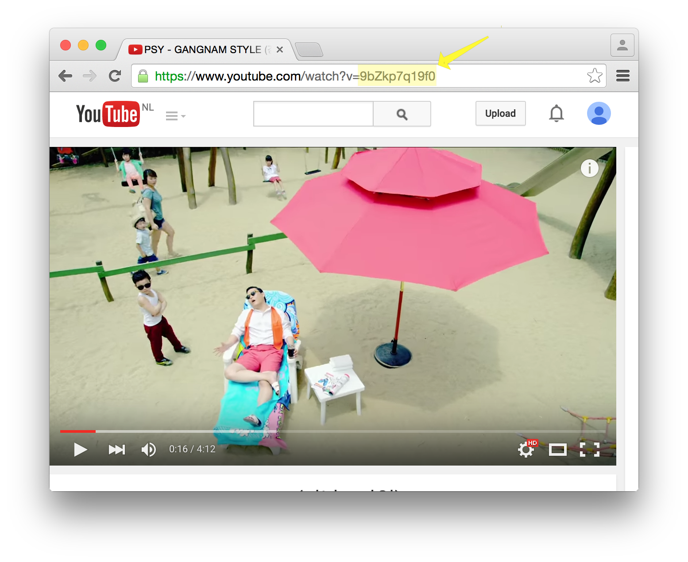
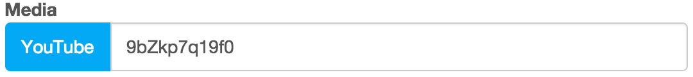
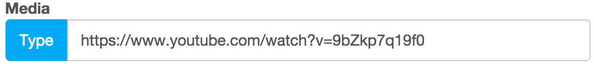

If you want to add a YouTube video to your product, you need to have the ID of the video. You can find the ID in the URL, for example:

| URL | ID | ||||
|---|---|---|---|---|---|
| https://www.youtube.com/watch?v=9bZkp7q19f0 | 9bZkp7q19f0 | ||||
Select YouTube as the media type and add the ID:

You can also enter the complete URL into the media field, Oronjo will determine the media type and ID once you hit update.
